Можливості
П'ять розділів: дашборд, завдання, замовлення, аналітика, налаштування. Плюс сповіщення й камери. Знімки зроблено на демонстраційній фермі; інтерфейс справжній.
| Розділ | Що там |
|---|---|
| Дашборд | Уся ферма наживо: статус, прогрес, температури, мініатюра деталі, фільтри й стелажі. |
| Завдання | Задачі друку: файл, принтери, запуск, прогрес кожного принтера; друки поза задачами. |
| Замовлення | Замовлення клієнтів, їхні задачі, статус виконання, файли замовлення. |
| Аналітика | Пластик, час друку, простій принтерів, розріз по клієнтах, експорт у CSV. |
| Налаштування | Принтери, стелажі, клієнти, користувачі з ролями, файли на сервері, версія системи. |
Дашборд
Кожен принтер — картка, що оновлюється наживо. Зверху: скільки принтерів онлайн і швидкі фільтри за станом.

На картці принтера:
- назва, модель і код місця на стелажі (A23 — стелаж A, полиця 2, місце 3);
- статус: друкує · готовий · пауза · помилка · сервіс · офлайн;
- температури сопла, столу й камери принтера;
- мініатюра деталі, прогрес і час до кінця;
- філамент і його колір, клієнт і дедлайн задачі;
- коротка причина паузи чи помилки: «філамент», «маркер пластини», «спагеті», «сопло»… У Bambu — за кодом самого принтера. Жовтий ⚠ з числом — попередження принтера, через які він ще не став на паузу.
Фільтри, стелажі й пошук
Один клік — і на екрані лише те, що зараз важливо: принтери, які потребують уваги, або один стелаж. Пошук — за назвою, кодом місця, моделлю, статусом, філаментом, задачею, файлом чи клієнтом. «А23», набране українською розкладкою, теж знайде A23.
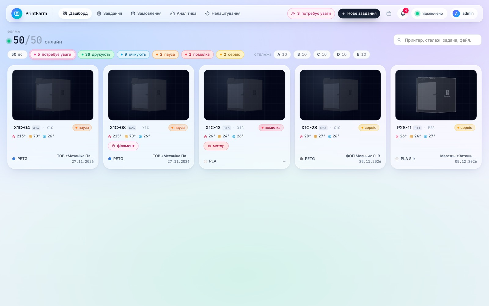
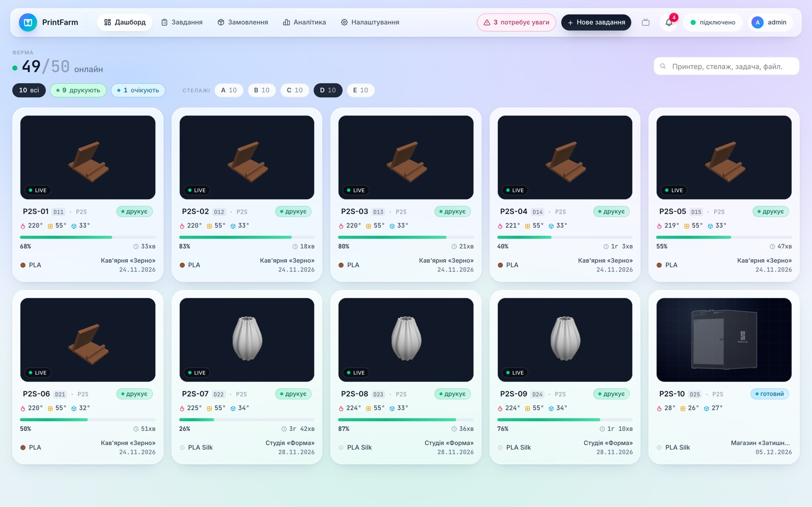
| Статус | Значення |
|---|---|
| друкує | друк іде, видно прогрес і залишок часу |
| готовий | вільний, можна відправляти наступну задачу |
| пауза | друк зупинено оператором або принтером (наприклад, закінчився філамент) |
| помилка | принтер повідомив про помилку — потрібна увага оператора |
| сервіс | на обслуговуванні; друки з ферми на нього не йдуть |
| офлайн | немає зв'язку з принтером |
Принтер зблизька
Клік по картці відкриває панель принтера: поточна задача, прогрес, температури, філамент, камера й кнопки керування (пауза, продовжити, зупинити, режим сервісу).
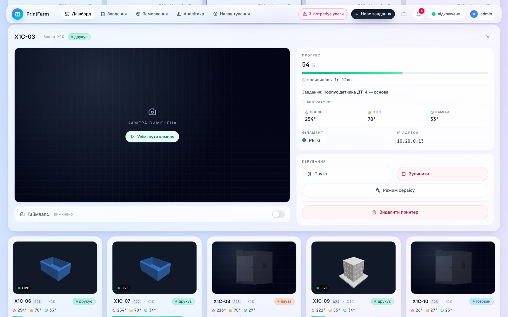
наступна версія Якщо Bambu Lab на паузі чи в помилці — блок «Причина паузи»: код, як на екрані принтера (07FF-8011), що робити українською, і кнопки, які для цієї причини дає сам принтер: «Ігнорувати й продовжити», «Проблему усунуто — продовжити», «Філамент заправлено — продовжити». З підтвердженням; це та сама команда, що з Bambu Studio.
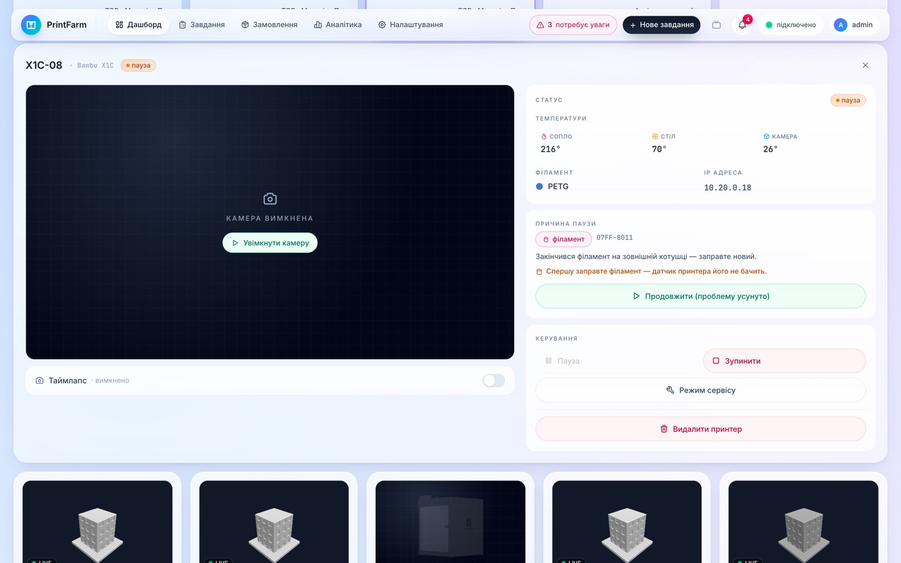
- Камера — лише на вимогу. Відео вмикає оператор кнопкою; на диск нічого не пишеться, мережа й процесор не навантажуються, коли ніхто не дивиться.
- Режим сервісу. Принтер на обслуговуванні не отримає жодного друку з ферми, доки оператор не поверне його в роботу.
Сповіщення
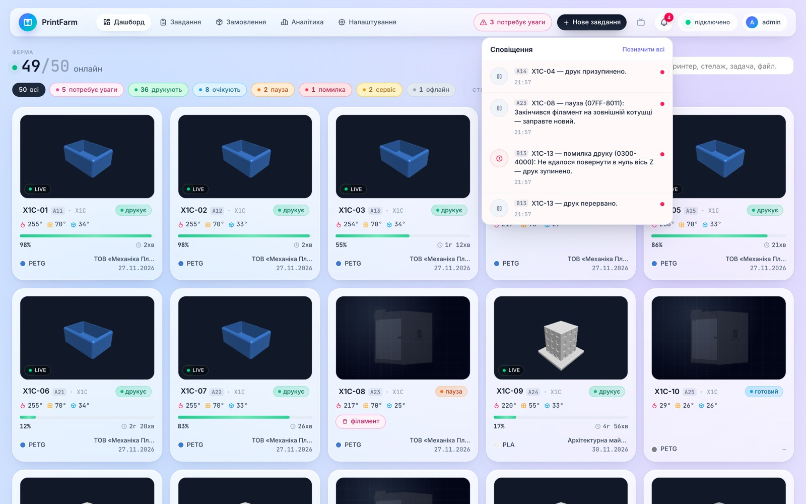
- Сповіщення в браузері оператора: друк завершено, пауза, помилка, друк перервано, задачу не вдалося відправити (з причиною, наприклад «принтер зайнятий»).
- «Потребує уваги» з будь-якої сторінки. Поки є принтер на паузі чи з помилкою, у верхній панелі горить лічильник; клік — список з кодами місць і причиною.
- Код місця в кожному сповіщенні — одразу видно, до якого стелажа йти. Код актуальний, навіть якщо принтер переставили.
- Офлайн-контроль. Принтер, що зник з мережі, позначається офлайн; якщо повернеться з тим самим друком — облік продовжиться.
- Стійкі помилки. Короткочасні збої не смикають оператора, а помилка, що триває, — так.
Відеостіна
Окремий екран для монітора в цеху: камери принтерів сіткою на 4, 6, 9, 12, 16 або 24 вікна, з перемиканням сторінок. Відео йде лише на час перегляду.
Завдання
Від файлу до друку на десятках принтерів
Оператор завантажує файл зі слайсера (.gcode або .gcode.3mf). Система сама
читає з нього модель принтера, тип і колір філаменту, час друку, вагу пластику й мініатюру.
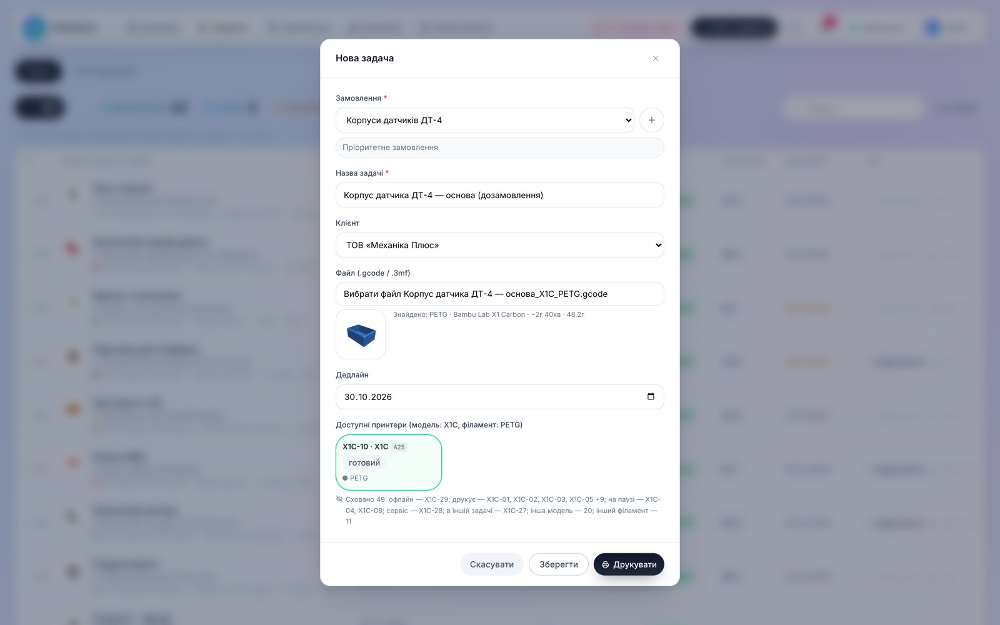
- Замовлення й клієнт. Задача завжди належить замовленню — так облік не губиться.
- Файл. Метадані зчитуються автоматично, а поруч одразу видно мініатюру деталі — якщо вибрали не той файл, це помітно ще до відправки. Великі файли — з індикатором завантаження.
- Принтери. Система пропонує лише ті, що підходять: потрібна модель, той самий філамент, вільні. Решта прихована з причиною: «друкує», «на паузі», «інша модель», «інший філамент».
- Порядок запуску. Скільки принтерів стартує одночасно і з якою затримкою між групами — щоб десятки нагрівів не почались в одну секунду.
- «Друкувати» або «Зберегти», щоб відправити пізніше. Черга живе на сервері: браузер можна закрити.
Перед відправкою система ще раз перевіряє кожен принтер: на зайнятий, на паузі чи в сервісі друк не піде, а в задачі буде видно чому.
Реєстр задач
Зведення за статусами, пошук, архів «Історія». У рядку — мініатюра деталі, файл з параметрами, замовлення, клієнт, кількість принтерів і дедлайн.
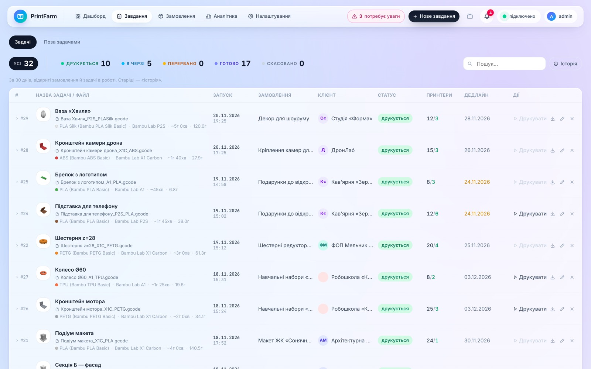
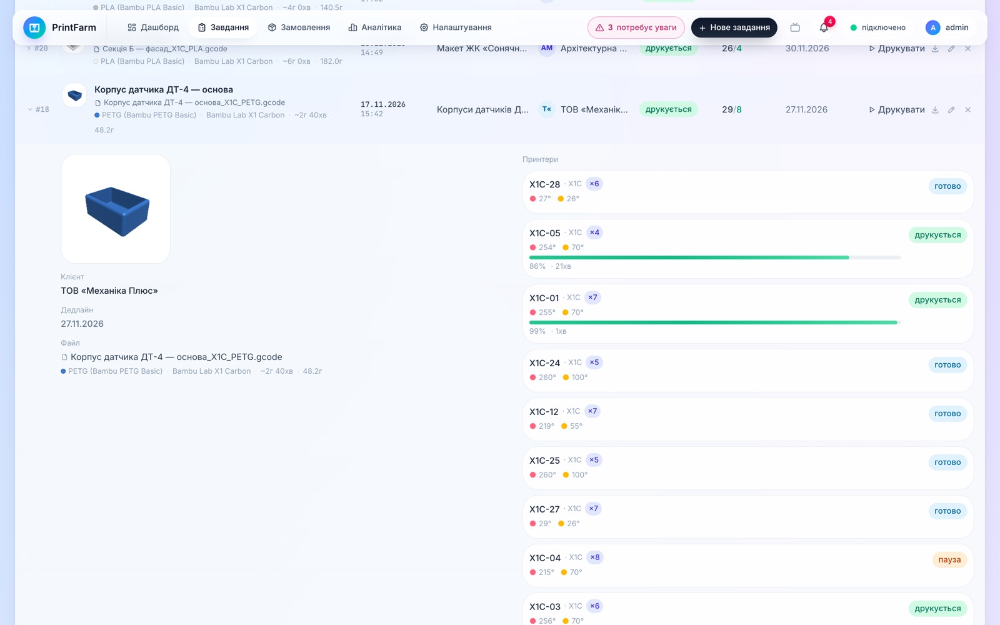
- Серійний друк. Повтори, запущені з екрана принтера, зараховуються до задачі.
- Перервані друки не губляться: видно, де саме, і задачу можна відправити повторно.
Друки поза задачами
Друк запустили з екрана принтера чи напряму зі слайсера? Якщо файл уже є в задачі — друк зараховується до неї. Якщо ні — потрапляє в список «Поза задачами»: принтер, файл, початок і кінець.
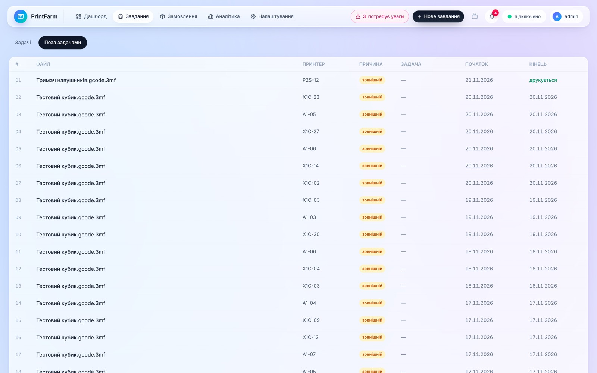
Замовлення
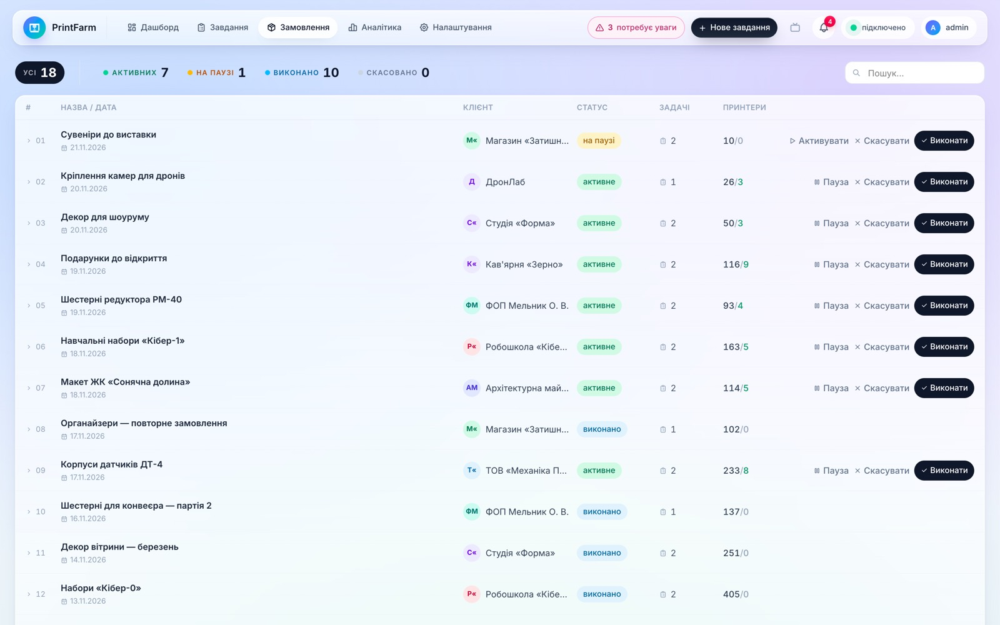
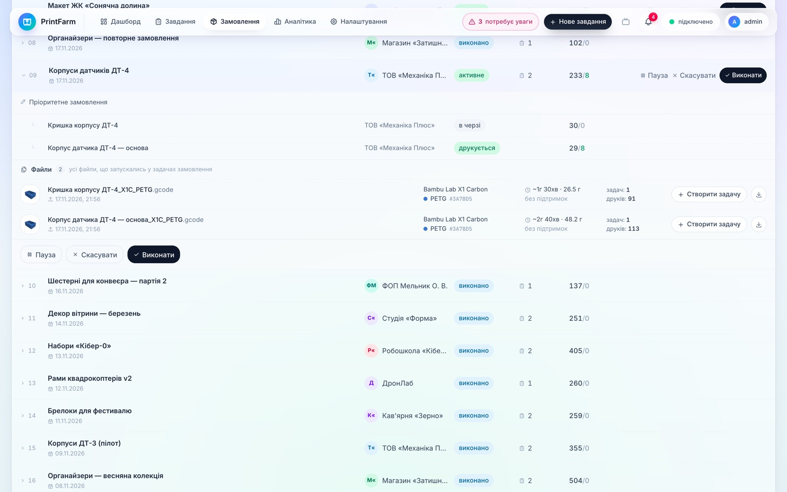
- Статус веде оператор: пауза, відновлення, «виконано» чи «скасовано». Система лише позначає, що друк по замовленню почався.
- Закрити — коли друк завершено. Поки друк іде чи в черзі, закрити не можна. Перервані друки система підсвітить і перепитає. Скасування — лише з причиною.
- Файли замовлення. Клієнт замовив ще партію — «Створити задачу» біля файлу відкриває вже заповнену форму, без повторного завантаження.
- Пауза замовлення притримує його задачі, доки замовлення не відновлено.
- Клієнти — спільний довідник для замовлень, задач і аналітики.
Аналітика
Підсумки: пластик загалом і на деталі (без підтримок), години друку, кількість друків і виконаних задач. Фільтри — клієнт, принтер, задача, замовлення, філамент, період. Будь-яку таблицю можна вивантажити в CSV.
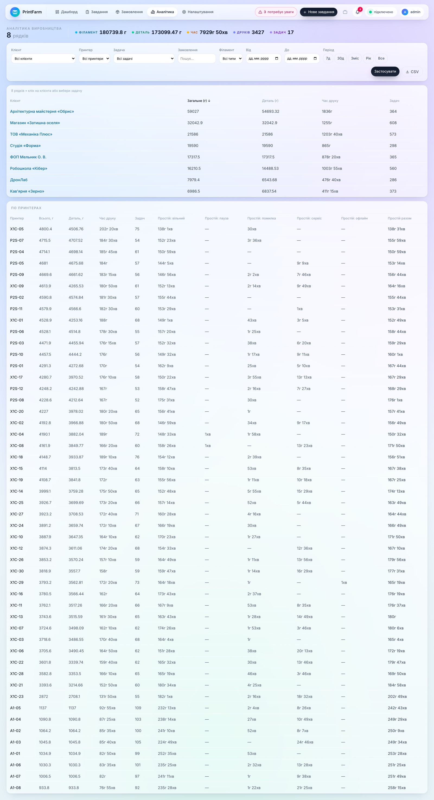
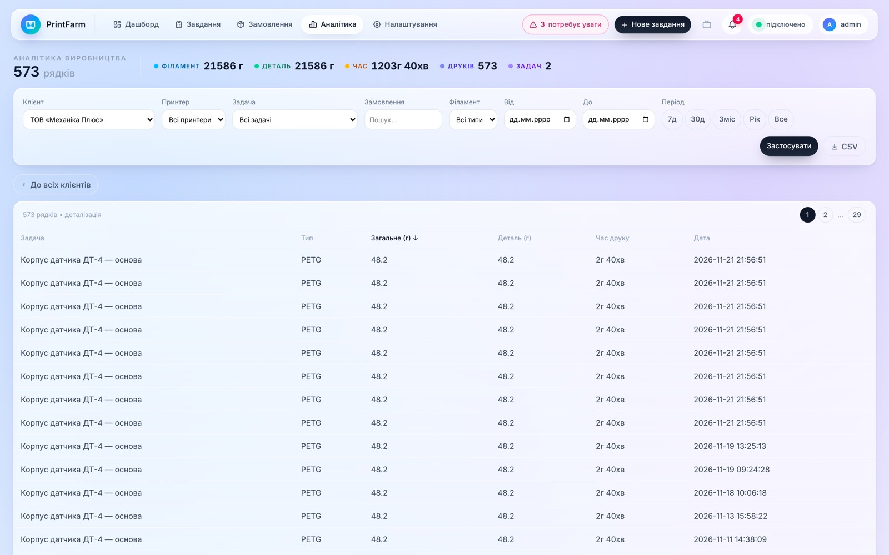
Вага пластику й час друку зараз беруться з даних слайсера у файлі задачі, а не за фактом. Перерваний друк рахується як повний. Облік за фактом — у планах.
Налаштування
Принтери, стелажі, клієнти й користувачі додаються в інтерфейсі — без конфігураційних файлів і без програміста.
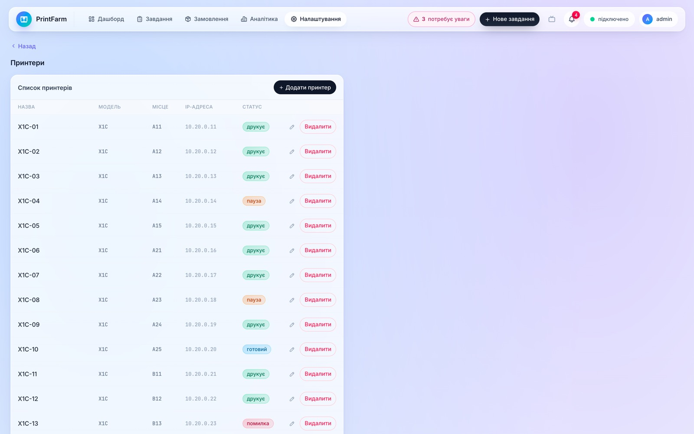
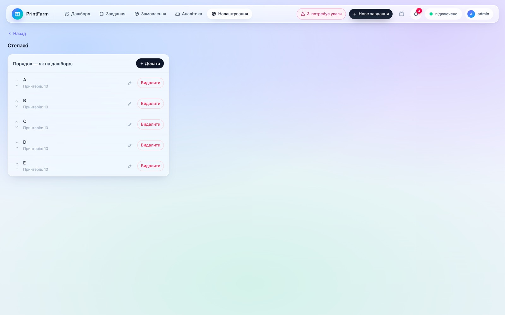
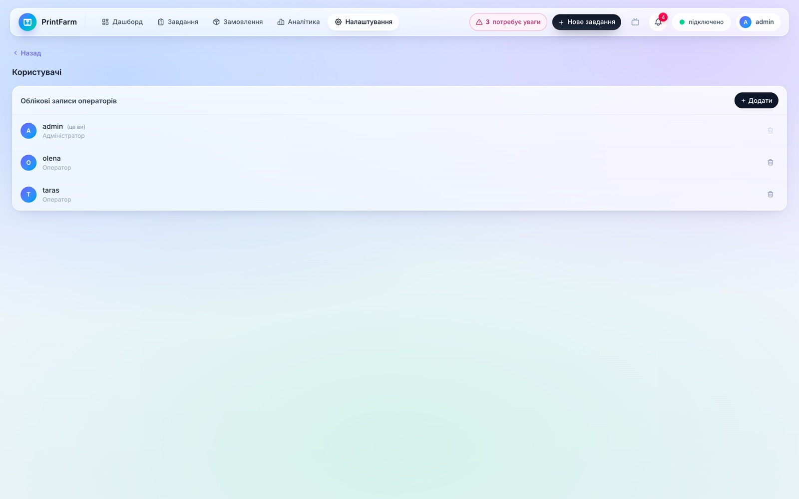
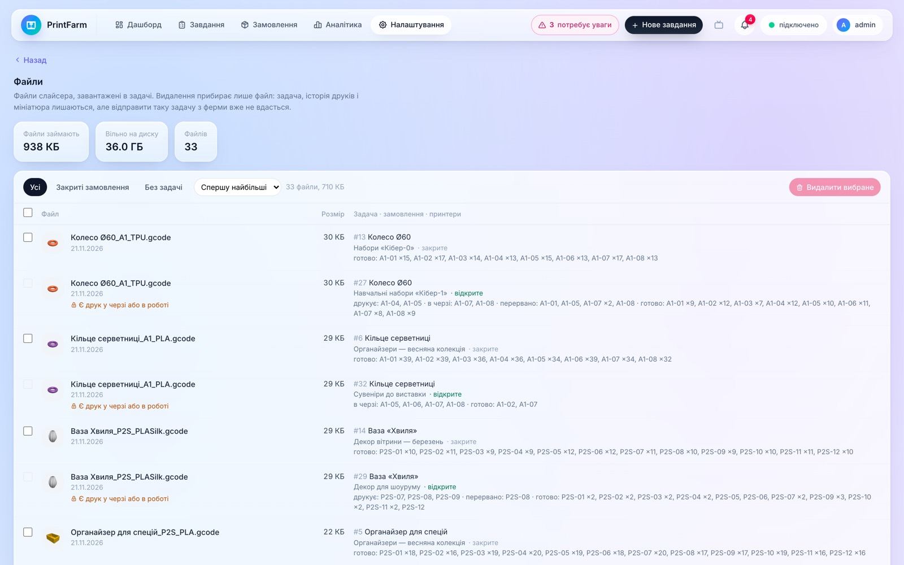
Підтримувані принтери
PrintFarm говорить з кожним принтером його «рідною мовою» напряму в локальній мережі, без хмарних сервісів виробника. Що з цього перевірено наживо — на сторінці «Що працює».
| Бренд | Моделі | Зв'язок | Камера |
|---|---|---|---|
| Bambu Lab | X1, X1 Carbon, X1E, P1S, P1P, P2S, A1, A1 Mini, H2D, H2S | MQTT/TLS + FTPS (LAN) | так |
| Creality | K1, K1 Max | Klipper · Moonraker | так |
| Qidi | Q2 | Klipper · Moonraker | так |
| Prusa | CORE One | PrusaLink | — |
- Нова модель відомого бренду — один запис у реєстрі моделей.
- Новий бренд — окремий драйвер; ядро й інтерфейс не змінюються, форма додавання принтера сама показує потрібні поля.
- Слайсер — будь-який, що зберігає
.gcode/.gcode.3mf(основний — OrcaSlicer).
Надійність і безпека
- Облік не губиться. Після обриву мережі чи перезапуску сервера облік поточних друків продовжується. Неповні повідомлення від принтера не збивають стан.
- Захист від подвійного друку. Друк не піде поверх незавершеного, на принтер у сервісі чи двічі на той самий принтер.
- Доступ. Вхід за логіном і паролем, ролі, захист від підбору пароля.
- Бекапи. Щоденна копія бази автоматично; перед кожним оновленням — ще одна.
- Лише локальна мережа. Інтернет для роботи ферми не потрібен.